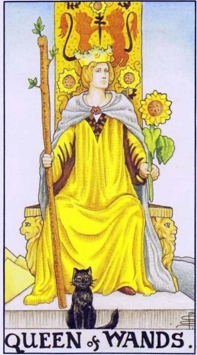

Minor Arcana · Wands
XIIIQueen of Wands
The mistress of fire: charisma and warmth, business acumen and magnetism of a man who knows his own value and warms his own.
Archetype and core meaning
The Queen's throne is carved with lions, and at her foot a sunflower has curled up -- a fire turned to the light. She looks straight, with a little challenge: the queen, who is setting her own hearth. In the suit of wands, she embodies mature fire -- not gust, but constant burning: the warmth of the house, the drive of the business, the magnetism of the personality.
The queen is a mistress in the best sense of the word: her power nourishes others without exhaustion. She leads projects, hosts, loves passionately and lives big. The card states that femininity and power do not argue with each other when both grow out of self-esteem. Her lesson is to shine not with combustion, but with burning.
Daily life
Housewife's Day: you do everything -- lunch for six, important calls, a run. You're in your element, with lots of things to do and lots of people. It's good to bring beauty to the interior, to get friends at the table, to have a family party. The energy is spent generously and comes back doubly.
Work and career
Professional peak: you lead a team, you deliver brilliantly, you combine several projects without loss of quality. The card is favorable for managers and everyone who builds business on personal charm — sales, PR, education, hospitality. Colleagues come to you for both a solution and a charge: that is leadership.
Relationships
The love of mature passion: you attract without pursuing, and you give warmth without dissolving. You pair up with even fire, loyalty and generosity, a home you want to return to. The Queen promises to meet a person who is worthy of your energy level. Just don't play out of reach - sincerity is stronger than play.
Health
Healthy, provided that self-care is included in the to-do list: The Queen tends to serve everyone by forgetting to eat. The basis of her strength is regularity: eating, moving, resting on schedule. Dancing, bathing, sunshine are useful. The "burnout" symptom is a signal to slow down before illness occurs.
Spiritual meaning
The witch-master of the hearth in the old sense: the power of the house altar, the amulets of the family, the magic of hospitality and the word spoken at the table. The queen of wands patronizes the practices of abundance and home protection, working with fire and the sun. Her secret is order in her own flame: first she kindled, then she gave.
The fire turned inward: behind the bright facade - jealousy and complacency or burnout and quiet loss of oneself.
Archetype and core meaning
The upside down Queen is the mistress who lost her hearth. The first pole is outward: despotic, jealousy, the need to command everyone who is in the circle, resentment at not recognizing. The second is inward: the facade is bright, and the void is inside, irritation and the quiet question, "Who am I without my roles?"
Often, the card describes a person who has been a mom, a mistress and a motor for years until it is discovered that his own fire is not being fueled, envy and pickiness are symptoms of hunger for heat, not evil nature, treatment begins with permission to take care of yourself, not least.
Daily life
A day of stress: little things get annoying, homely "doing nothing right," trying to control everything ends in a fight, or vice versa - apathy and "leave me alone" in broad daylight. Don't demand the usual brilliance: minimum things, a warm bath, early withdrawal.
Work and career
The climate has gone bad: the boss picks on her, the colleague takes credit, you give away the harshness and then you regret it. There may be a crisis of an overloaded leader — there is power, there is no energy. Delegate and acknowledge fatigue where it is safe — the team exhales.
Relationships
Jealousy and control poison the alliance: checking the phone, counting the grievances, demanding proof of love. Sometimes the card shows a couple where one shines and the other warms his fame as an entourage. Ask yourself honestly: do you love a person or fear losing a role with him? The warmth returns with tenderness to himself.
Health
Your body signals burnout: hormonal swings, female flares, migraines, eating breakdowns, emotional stress jumps from irritability to tears, you need a doctor, rest and exercise reduction, not a vitamin on top of three jobs: recovery starts with withdrawal, not with addition.
Spiritual meaning
The Queen inverted is a hearth covered with ashes: the practice is formal, there is no strength; there may be damage to fade or, more often, self-prohibition of your own radiance. The card indicates envy in the environment and attachment to old grievances. Start simple: light a candle for yourself, not for the ritual, and listen to what you feel.
🌿 How the school reads this rank
The main idea
It controls people's desires, it senses what the other person wants, and it can make the person want what they want.
How it manifests
It's politics, marketing, negotiation, social influence, it's the charm and subtle direction of the partner without direct orders, and the cat on the card conveys the principle that you can't force it, you can only create desire.
The shadow side
Manipulation becomes a rough game of one’s own passions and status.
Keywords
Socialism · desires · charisma · manipulation · politics
📜 In detail — from the rank lecture
Essence of the card
Society and Fire: the exchange of desires: to feel and work with others’ desires; politics.
Upright position
- The standard is Anna of Austria in The Three Musketeers: she couldn't give the order, but she played on D'Artagnan's desire to curry favor with Constance. She knows other people's wishes and uses the situation for good; when she herself becomes a hostage of passion (Duke Buckingham) - already upside down.
- “A great manipulator – not in vain draw a cat”: awakens the desire so that a person is sure that it is his own (silently talks about delicious sushi, until his husband himself offers a restaurant).
- Black Witch Cat: “The true power of a woman is to arouse and discern a man’s desire”; subconsciously chooses the most profitable light in a restaurant.
- Scarlett O'Hara - typical behavior (collective image), will "never starve"; Joan of Arc = wands plus cups.
Negative meaning
• own passions and status - a girl without the last iPhone; conjuncture "either a cross or cowards." Sobchak - an inverted queen of wands ("a socialite, then a presidential candidate"); Dom-2 - "the purest wand."
School emphases and distinctive points
- The main reception of the lecture is film portraits as a textbook: Musketeers, Gone with the Wind, Downton, The X-Files, Harry Potter.
- His astrology is simple: cancer/scorpion/fish are cups, twins/balances/waters are swords, rams/lion/shooters are wands, corpuscles/maiden/capricorn are pentacles. The personality consists of four elements: the card shows the prevailing regime, Aries can fall out any queen.
- Menagerie: the cat of wands - witch and charm (the cat can not be trained - only create a desire, like Kuklachev hungry cats; the dog obeys orders - this is about swords); the pentacle hare - fertility and childbirth; the butterfly of swords - the transformation of the caterpillar into an exalted (as well as a dragonfly); the cups of fish - there is no mermaid: only the king lives completely in the sea.
- Epochal scale: the destruction of walls and borders reads on water (Gorbachev), the return of walls – again swords.
- Instead of examples of layouts – portrait characteristics of public figures; the Slavic series and the topic of health in the lecture do not sound at all.
Keywords
Society, playing on other people's wishes, cat charm, gray cardinal.